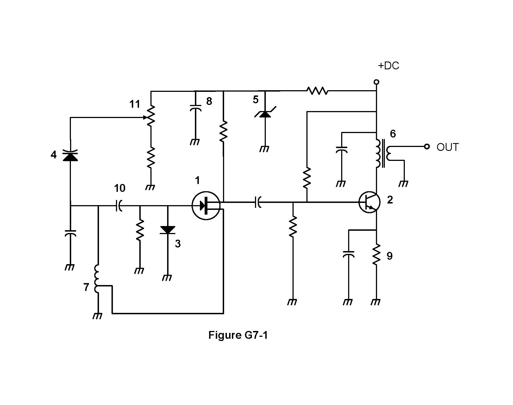

All 38 Ham Radio General Class questions for G7 Practical Circuits with the correct answers marked, from the official 2023-2027 question pool. Test yourself with the free practice exam.
G7A01
What is the function of a power supply bleeder resistor?
A. It acts as a fuse for excess voltage
B. It discharges the filter capacitors when power is removed ✓
C. It removes shock hazards from the induction coils
D. It eliminates ground loop current
G7A02
Which of the following components are used in a power supply filter network?
A. Diodes
B. Transformers and transducers
C. Capacitors and inductors ✓
D. All these choices are correct
G7A03
Which type of rectifier circuit uses two diodes and a center-tapped transformer?
A. Full-wave ✓
B. Full-wave bridge
C. Half-wave
D. Synchronous
G7A04
What is characteristic of a half-wave rectifier in a power supply?
A. Only one diode is required ✓
B. The ripple frequency is twice that of a full-wave rectifier
C. More current can be drawn from the half-wave rectifier
D. The output voltage is two times the peak input voltage
G7A05
What portion of the AC cycle is converted to DC by a half-wave rectifier?
A. 90 degrees
B. 180 degrees ✓
C. 270 degrees
D. 360 degrees
G7A06
What portion of the AC cycle is converted to DC by a full-wave rectifier?
A. 90 degrees
B. 180 degrees
C. 270 degrees
D. 360 degrees ✓
G7A07
What is the output waveform of an unfiltered full-wave rectifier connected to a resistive load?
A. A series of DC pulses at twice the frequency of the AC input ✓
B. A series of DC pulses at the same frequency as the AC input
C. A sine wave at half the frequency of the AC input
D. A steady DC voltage
G7A08
Which of the following is characteristic of a switchmode power supply as compared to a linear power supply?
A. Faster switching time makes higher output voltage possible
B. Fewer circuit components are required
C. High-frequency operation allows the use of smaller components ✓
D. Inherently more stable
G7A09
Which symbol in figure G7-1 represents a field effect transistor?

A. Symbol 2
B. Symbol 5
C. Symbol 1 ✓
D. Symbol 4
G7A10
Which symbol in figure G7-1 represents a Zener diode?
A. Symbol 4
B. Symbol 1
C. Symbol 11
D. Symbol 5 ✓
G7A11
Which symbol in figure G7-1 represents an NPN junction transistor?
A. Symbol 1
B. Symbol 2 ✓
C. Symbol 7
D. Symbol 11
G7A12
Which symbol in Figure G7-1 represents a solid core transformer?
A. Symbol 4
B. Symbol 7
C. Symbol 6 ✓
D. Symbol 1
G7A13
Which symbol in Figure G7-1 represents a tapped inductor?
A. Symbol 7 ✓
B. Symbol 11
C. Symbol 6
D. Symbol 1
G7B01
What is the purpose of neutralizing an amplifier?
A. To limit the modulation index
B. To eliminate self-oscillations ✓
C. To cut off the final amplifier during standby periods
D. To keep the carrier on frequency
G7B02
Which of these classes of amplifiers has the highest efficiency?
A. Class A
B. Class B
C. Class AB
D. Class C ✓
G7B03
Which of the following describes the function of a two-input AND gate?
A. Output is high when either or both inputs are low
B. Output is high only when both inputs are high ✓
C. Output is low when either or both inputs are high
D. Output is low only when both inputs are high
G7B04
In a Class A amplifier, what percentage of the time does the amplifying device conduct?
A. 100% ✓
B. More than 50% but less than 100%
C. 50%
D. Less than 50%
G7B05
How many states does a 3-bit binary counter have?
A. 3
B. 6
C. 8 ✓
D. 16
G7B06
What is a shift register?
A. A clocked array of circuits that passes data in steps along the array ✓
B. An array of operational amplifiers used for tri-state arithmetic operations
C. A digital mixer
D. An analog mixer
G7B07
Which of the following are basic components of a sine wave oscillator?
A. An amplifier and a divider
B. A frequency multiplier and a mixer
C. A circulator and a filter operating in a feed-forward loop
D. A filter and an amplifier operating in a feedback loop ✓
G7B08
How is the efficiency of an RF power amplifier determined?
A. Divide the DC input power by the DC output power
B. Divide the RF output power by the DC input power ✓
C. Multiply the RF input power by the reciprocal of the RF output power
D. Add the RF input power to the DC output power
G7B09
What determines the frequency of an LC oscillator?
A. The number of stages in the counter
B. The number of stages in the divider
C. The inductance and capacitance in the tank circuit ✓
D. The time delay of the lag circuit
G7B10
Which of the following describes a linear amplifier?
A. Any RF power amplifier used in conjunction with an amateur transceiver
B. An amplifier in which the output preserves the input waveform ✓
C. A Class C high efficiency amplifier
D. An amplifier used as a frequency multiplier
G7B11
For which of the following modes is a Class C power stage appropriate for amplifying a modulated signal?
A. SSB
B. FM ✓
C. AM
D. All these choices are correct
G7C01
What circuit is used to select one of the sidebands from a balanced modulator?
A. Carrier oscillator
B. Filter ✓
C. IF amplifier
D. RF amplifier
G7C02
What output is produced by a balanced modulator?
A. Frequency modulated RF
B. Audio with equalized frequency response
C. Audio extracted from the modulation signal
D. Double-sideband modulated RF ✓
G7C03
What is one reason to use an impedance matching transformer at a transmitter output?
A. To minimize transmitter power output
B. To present the desired impedance to the transmitter and feed line ✓
C. To reduce power supply ripple
D. To minimize radiation resistance
G7C04
How is a product detector used?
A. Used in test gear to detect spurious mixing products
B. Used in a transmitter to perform frequency multiplication
C. Used in an FM receiver to filter out unwanted sidebands
D. Used in a single sideband receiver to extract the modulated signal ✓
G7C05
Which of the following is characteristic of a direct digital synthesizer (DDS)?
A. Extremely narrow tuning range
B. Relatively high-power output
C. Pure sine wave output
D. Variable output frequency with the stability of a crystal oscillator ✓
G7C06
Which of the following is an advantage of a digital signal processing (DSP) filter compared to an analog filter?
A. A wide range of filter bandwidths and shapes can be created ✓
B. Fewer digital components are required
C. Mixing products are greatly reduced
D. The DSP filter is much more effective at VHF frequencies
G7C07
What term specifies a filter’s attenuation inside its passband?
A. Insertion loss ✓
B. Return loss
C. Q
D. Ultimate rejection
G7C08
Which parameter affects receiver sensitivity?
A. Input amplifier gain
B. Demodulator stage bandwidth
C. Input amplifier noise figure
D. All these choices are correct ✓
G7C09
What is the phase difference between the I and Q RF signals that software-defined radio (SDR) equipment uses for modulation and demodulation?
A. Zero
B. 90 degrees ✓
C. 180 degrees
D. 45 degrees
G7C10
What is an advantage of using I-Q modulation with software-defined radios (SDRs)?
A. The need for high resolution analog-to-digital converters is eliminated
B. All types of modulation can be created with appropriate processing ✓
C. Minimum detectible signal level is reduced
D. Automatic conversion of the signal from digital to analog
G7C11
Which of these functions is performed by software in a software-defined radio (SDR)?
A. Filtering
B. Detection
C. Modulation
D. All these choices are correct ✓
G7C12
What is the frequency above which a low-pass filter’s output power is less than half the input power?
A. Notch frequency
B. Neper frequency
C. Cutoff frequency ✓
D. Rolloff frequency
G7C13
What term specifies a filter’s maximum ability to reject signals outside its passband?
A. Notch depth
B. Rolloff
C. Insertion loss
D. Ultimate rejection ✓
G7C14
The bandwidth of a band-pass filter is measured between what two frequencies?
A. Upper and lower half-power ✓
B. Cutoff and rolloff
C. Pole and zero
D. Image and harmonic